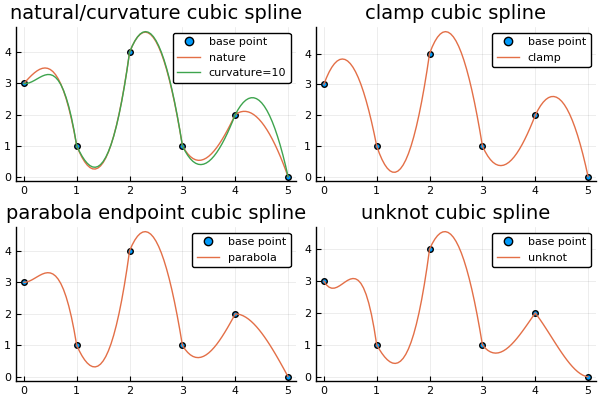

三次样条插值
InterpolationPolynomial.clamp_cubic_splineInterpolationPolynomial.curvature_adjustable_cubic_splineInterpolationPolynomial.natural_cubic_splineInterpolationPolynomial.parabola_endpoint_cubic_splineInterpolationPolynomial.unknot_cubic_spline
自然三次样条
InterpolationPolynomial.natural_cubic_spline — Function自然三次样条
natural_cubic_spline(x, y, k=10)三次样条
给定$n$个点$(x_1, y_1), (x_2, y_2),···,(x_n, y_n)$,其中$x_i$不同，并且升序。通过点$(x_1, y_1), (x_2, y_2),···,(x_n, y_n)$的三次样条S(x)是一组三次多项式：
$\qquad \begin{aligned} S_1(x) &= y_1 + b_1(x-x_1) + c_1(x-x_1)^2 + d_1(x-x_1)^3 \space\space 在区间[x_1, x_2]上 \\ S_2(x) &= y_2 + b_2(x-x_2) + c_2(x-x_2)^2 + d_2(x-x_2)^3 \space\space 在区间[x_2, x_3]上 \\ &··· \\ S_{n-1}(x) &= y_{n-1} + b_{n-1}(x-x_{n-1}) + c_{n-1}(x-x_{n-1})^2 + d_{n-1}(x-x_{n-1})^3 \space\space 在区间[x_{n-1}, x_n]上 \end{aligned}$
且具有以下性质：
- 性质1：$S_i(x_i) = y_i,S_{i+1}(x_{i+1}) = y_{i+1},i=1,2,···,n-1$`
- 性质2: $S'_{i-1}(x_i) = S'_{i}(x_i),i=2,···,n-1$`
- 性质3: $S''_{i-1}(x_i) = S''_{i}(x_i),i=2,···,n-1$`
意即相邻的曲线段在节点上具有相同的1阶、2阶导数
但注意在每一段中，满足这三个性质的三次多项式是无穷多个的。通常需要添加额外的约束条件来将问题域约束到唯一解。
根据性质1,可得出以下$n-1$个方程:
$\qquad \begin{aligned} y_2 &= S_1(x_2) = y_1 + b_1(x_2-x_1) + c_1(x_2-x_1)^2 + d_1(x_2-x_1)^3 \\ & ··· \\ y_n &= S_{n-1}(x_n) = y_{n-1} + b_{n-1}(x_n-x_{n-1}) + c_{n-1}(x_n-x_{n-1})^2 + d_{n-1}(x_n-x_{n-1})^3 \end{aligned}$
根据性质2，可得出以下$n-2$个方程:
$\qquad \begin{aligned} 0 &= S'_1(x_2) - S'_2(x_2) = b_1 + 2c_1(x_2-x_1)+3d_1(x_2-x_1)^2 - b_2 \\ &··· \\ 0 &= S'_{n-2}(x_{n-1}) - S'_{n-1}(x_{n-1}) = b_{n-2} + 2c_{n-2}(x_{n-1}-x_{n-2})+3d_{n-2}(x_{n-1}-x_{n-2})^2 - b_{n-1} \end{aligned}$
根据性质3，可得出以下$n-2$个方程:
$\qquad \begin{aligned} 0 &= S''_1(x_2) - S''_2(x_2) = 2c_1 + 6d_1(x_2-x_1) - 2c_2 \\ &··· \\ 0 &= S''_{n-2}(x_{n-1}) - S''_{n-1}(x_{n-1}) = 2c_{n-2} + 6d_{n-2}(x_{n-1}-x_{n-2}) - 2c_{n-1} \end{aligned}$
共计$3n-5$个方程、$3n-3$个系数(bi、ci、d_i)
为了简化方程，引入额外的未知变量$c_n = S''_{n-1}(x_n)/2$,会使计算更简单。同时引入：$\delta_i = x_{i+1}-x_i$、$\Delta_i = y_{i+1}-y_i$
则根据性质3的公式：
带入性质1的公式：
将以上两个公式带入性质2的公式中,则简化处以下$n-2$个方程：
$\qquad \begin{aligned} \delta_1c_1 + 2(\delta_1+\delta_2)c_2 + \delta_2c_3 &= 3(\frac{\Delta_2}{\delta_2} - \frac{\Delta_1}{\delta_1}) \\ &··· \\ \delta_{n-2}c_{n-2} + 2(\delta_{n-2}+\delta_{n-1})c_{n-1} + \delta_{n-1}c_n &= 3(\frac{\Delta_{n-1}}{\delta_{n-1}} - \frac{\Delta_{n-2}}{\delta_{n-2}}) \end{aligned}$
自然三次样条
自然三次样条也就是在性质1~3的基础上添加以下性质：
- $S''_1(x_1)=0$
- $S''_{n-1}(x_n)=0$
将样条的开始和结束端点设定为拐点。类似这种在区间两个端点添加的附加条件，被称为边界条件
自然三次样条的条件可以得到另外两个方程：
结合三次样条关于$c_i$的$n-2$个方程组合为一个针对n个未知量$(c_i)$的n个方程，写成矩阵形式，可以看到它是一个严格对角占优矩阵，通过它解出$[c_1 ··· c_n]$，然后带入分别求解出$b_i、d_i$
Example
julia> natural_cubic_spline([0 1 2], [3 -2 1], 10)
3×3 Array{Float64,2}:
2.0 0.0 -7.0
-2.0 6.0 -1.0
0.0 0.0 0.0曲率调整三次样条
InterpolationPolynomial.curvature_adjustable_cubic_spline — Function曲率调整三次样条
curvature_adjustable_cubic_spline(x, y, r1, rn, k=10)曲率调整三次样条和自然三次样条的不同之处在于，其中的$S''_1(x_1)、S''_{n-1}(x_n)$都是可由用户选择的任意数值，而不在是固定的0。这样在样条的开始和结束端点的曲率由用户来控制。
钳制三次样条
InterpolationPolynomial.clamp_cubic_spline — Function钳制三次样条
clamp_cubic_spline(x, y, v1, vn, k=10)钳制三次样条和曲率调整三次样条类似，不同的是，它的一阶导数$S'_1(x_1)、S'_{n-1}(x_n)$都是可有用户选择的定义的数值。这样在样条的开始和结束端点的斜率由用户来控制。
约束条件
推导
因为
$\qquad \begin{aligned} S'_1(x_1) &= b_1 \\ S'_{n-1}(x_n) &= b_{n-1} + c_{n-1}\delta_{n-1} + d_{n-1}\delta^2_{n-1} \end{aligned}$
可得两个新的方程：
$\qquad \begin{aligned} 2\delta_1c_1 +\delta_1c_2 &= 3(\frac{\Delta_1}{\delta_1}-v_1) \\ \delta_{n-1}c_{n-1} +2\delta_{n-1}c_n &= 3(v_n-\frac{\Delta_{n-1}}{\delta_{n-1}}) \end{aligned}$
抛物线端点三次样条
InterpolationPolynomial.parabola_endpoint_cubic_spline — Function抛物线端点三次样条
parabola_endpoint_cubic_spline(x, y, k=10)约束条件
$d_1=0=d_{n-1}$
通过定义$d_1=0=d_{n-1}$使得样条的起始和结束部分的$S_1$和$S_{n-1}$至多2阶。
可通过要求$c_1=c_2,c_{n-1}=c_n$使得约束条件成立
非纽结三次样条
InterpolationPolynomial.unknot_cubic_spline — Function非纽结三次样条
unknot_cubic_spline(x, y, k=10)约束条件
$d_1 = d_2, d_{n-2}=d_{n-1}$
等价于: $S'''_1{x_2} = S'''_2(x_2), S'''_{n-2}(x_{n-1})=S'''_{n-1}(x_{n-1})$
可以看到$S_1$和$S_2$在$x_2$的0、1、2、3阶导数均相等，意味着不再将$x_2$作为基点，在$[x_1, x_3]$上$S_1=S_2$;同理$x_{n-1}$不再作为基点，$S_{n-2}=S_{n-1}$
推导
$\qquad \begin{aligned} d_1=d_2 &\Rightarrow \frac{c_2-c_1}{\delta_1} = \frac{c_3-c_2}{\delta_2} \\ &\Rightarrow \delta_2c_1 - (\delta_1+\delta_2)c_2 + \delta_1c_3=0 \\ d_{n-2} = d_{n-1} &\Rightarrow \delta_{n-1}c_{n-2} - (\delta_{n-2} + \delta_{n-1})c_{n-1} + \delta_{n-2}c_n = 0 \end{aligned}$
不同三次样条方法比较
下面分别是针对$x=[0 1 2 3 4 5]、y=[3 1 4 1 2 0]$进行三次样条插值的图像
x_0 = [0;1;2;3;4;5]
y_0 = [3;1;4;1;2;0]
n = length(x_0)
function generate_coordinate(coeff)
x = []
y = []
for i = 1:n-1
xs = x_0[i]:0.05:x_0[i+1]
b, c, d = coeff[i, :]
dx = xs.-x_0[i]
ys = dx.*d
ys = dx.*(ys.+c)
ys = dx.*(ys.+b) .+ y_0[i]
x = [x;xs]
y = [y;ys]
end
return x, y
end
x1, y1 = generate_coordinate(natural_cubic_spline(x_0, y_0))
x2, y2 = generate_coordinate(curvature_adjustable_cubic_spline(x_0, y_0, 10, 10)) # 端点处曲率设置为10
x3, y3 = generate_coordinate(clamp_cubic_spline(x_0, y_0, 0, 0)) # 端点处斜率设置为0
x4, y4 = generate_coordinate(parabola_endpoint_cubic_spline(x_0, y_0))
x5, y5 = generate_coordinate(unknot_cubic_spline(x_0, y_0))
plot(
plot!(scatter(x_0, y_0, label="base point"), x1, [y1 y2], title="natural/curvature cubic spline", label=["nature" "curvature=10"]),
plot!(scatter(x_0, y_0, label="base point"), x3, [y3], title="clamp cubic spline", label="clamp"),
plot!(scatter(x_0, y_0, label="base point"), x4, [y4], title="parabola endpoint cubic spline", label="parabola"),
plot!(scatter(x_0, y_0, label="base point"), x5, [y5], title="unknot cubic spline", label="unknot")
)